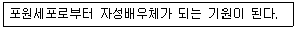
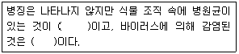
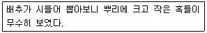
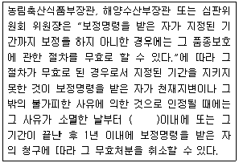
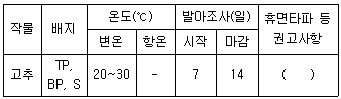
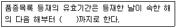
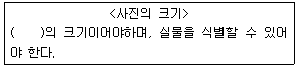
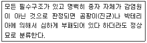
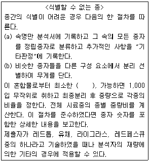
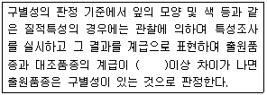

종자기사 (2019-04-27 기출문제)
1과목: 종자생산학
1. 채종포장 선정 시 격리 실시를 중요시하는 이유로 가장 옳은 것은?
- 조수해(鳥獸害) 방지
- 병ㆍ해충 방지
- 잡초유입 방지
- 다른 화분의 혼입 방지
(정답률: 93%)

2. 다음에 해당하는 용어는?

- 주심
- 주공
- 주피
- 에피스테이스
(정답률: 88%)
3. 다음 중 봉지씌우기(피대)를 가장 필요로 하는 것은?
- 시판을 위한 고정종 채종
- 인공수분에 의한 F1채종
- 자가불화합성을 이용한 F1채종
- 웅성불임성을 이용한 F1채종
(정답률: 80%)
4. 다음 중 피자식물의 중복수정에서 배의 염색체수로 가장 옳은 것은?
- 2n
- 3n
- 4n
- 5n
(정답률: 88%)
5. 영양기관을 이용한 영양번식법을 실시하는 이유로 가장 옳은 것은?
- 일시에 번식이 가능하기 때문에
- 파종 또는 이식작업이 편리하여 노동력이 절약되기 때문에
- 우량한 유전질의 영속적인 유지를 위하여
- 종자가 크게 절약되기 때문에
(정답률: 86%)
6. 다음 중 암꽃의 수정능력 보유기간이 가장 긴 작물은?
- 호박
- 수박
- 양배추
- 가지
(정답률: 51%)
7. 다음 중 유한화서이면서, 단정화서에 해당하는 것은?
- 쥐똥나무
- 목련
- 붉은오리나무
- 사람주나무
(정답률: 79%)
8. 다음 중 종자 춘화형 채소로만 나열된 것은?
- 무, 배추
- 양배추, 꽃양배추
- 우엉, 당근
- 셀러리, 양파
(정답률: 66%)
9. 배 휴면을 하는 종자의 경우 물리적 휴면타파법으로 가장 효과적인 것은?
- 저온 습윤 처리
- 고온 습윤 처리
- 저온 건조 처리
- 고온 건조 처리
(정답률: 63%)
10. 다음 중 공중습도가 높을 때 수정이 가장 잘 안되는 작물에 해당하는 것은?
- 고추
- 벼
- 당근
- 양파
(정답률: 75%)
11. 다음 중 자연적으로 씨없는 과실이 형성되는 작물로 가장 거리가 먼 것은?
- 감
- 바나나
- 수박
- 포도
(정답률: 84%)
12. 다음 중 화아유도에 영향을 미치는 조건으로 거리가 먼 것은?
- 옥신
- 730nm이상의 광
- 저온
- 탄소/질소의 비율
(정답률: 69%)
13. 다음 중 오이의 암꽃발달에 가장 유리한 조건은?
- 13℃ 정도의 야간저온과 8시간 정도의 단일조건
- 18℃ 정도의 야간저온과 10시간 정도의 단일조건
- 27℃ 정도의 주간온도와 14시간 정도의 장일조건
- 32℃ 정도의 주간온도와 15시간 정도의 장일조건
(정답률: 73%)
14. 상추 종자에서 단백질을 다량 함유하고 발아기간 동안 배유를 분해하는 효소를 합성하는 곳으로 가장 옳은 것은?
- 과피
- 중배축
- 호분층
- 종피
(정답률: 76%)
15. 다음 중 종피의 특수기관인 제(濟, hilum)가 종자 뒷면에 있는 것으로 가장 옳은 것은?
- 상추
- 배추
- 콩
- 쑥갓
(정답률: 82%)
16. 채종재배에서 화곡류의 일반적인 수확적기로 가장 옳은 것은?
- 감수분열기
- 황숙기
- 유숙기
- 갈숙기
(정답률: 90%)
17. 다음 중 종자발아에 필요한 수분흡수량이 가장 많은 것은?
- 벼
- 옥수수
- 콩
- 밀
(정답률: 72%)
18. 다음 중 뇌수분을 원종채종의 수단으로 사용하는 작물로 가장 옳은 것은?
- 벼
- 오이
- 토마토
- 배추
(정답률: 74%)
19. 다음 중 과실이 영(潁)에 싸여 있는 것은?
- 시금치
- 귀리
- 밀
- 옥수수
(정답률: 81%)
20. 다음 중 감자의 휴면타파법으로 가장 적절한 것은?
- GA 처리
- MH 처리
- α선 처리
- 저온저장(0~6℃)
(정답률: 83%)
2과목: 식물육종학
21. 번식방법에 따른 육종방법 결정에 관여하는 요인이 아닌 것은?
- 유전자수
- 자가수정
- 타가수정
- 영양번식
(정답률: 80%)
22. 배추의 수분과정 시 가장 관계가 적은 것은?
- 타가수분
- 뇌수분
- 말기수분
- 지연수분
(정답률: 56%)
23. 다음 중 선발 총점에 대한 설명으로 가장 옳은 것은?
- 한 형질의 선발에 대해서만 이용 가능하다.
- 질적 형질에 대해서만 유효하다.
- 선발 지수를 이용하여 구한다.
- 선발 총점이 낮아야 선발대상이 된다.
(정답률: 81%)
24. 목초류에서 가장 널리 이용되는 1대잡종계통육종법은?
- 단교잡
- 3원교잡
- 합성품종
- 복교잡
(정답률: 53%)
25. 다음 작물 중 크세니아 현상이 가장 잘 일어나는 작물은?
- 옥수수
- 메밀
- 호밀
- 양파
(정답률: 63%)
26. 다음 중 교잡육종법에 대한 설명으로 가장 옳은 것은?
- 계통육종법은 질적형질의 선발에 효과적이다.
- 자식성 작물의 잡종은 자식을 거듭할수록 집단내의 호모접합성은 감소한다.
- 집단육종법은 잡종 집단의 취급은 용이하지만, 자연선택은 이용할 수 없다.
- 집단육종법이 계통육종법보다 육종연한을 단축 할 수 있다.
(정답률: 63%)
27. 다음 변이의 종류 중 양적변이가 아닌 것은?
- 종실 수량
- 곡물의 찰성
- 단백질 함량
- 건물중
(정답률: 78%)
28. 농작물의 꽃가루 배양 의하여 얻어진 반수체 식물은 육종적으로 어떤 점이 가장 유리한가?
- 붙임성이 높기 때문에 자연교잡율이 높다.
- 유전적으로 헤테로 상태이므로 잡종강세가 크게 나타난다.
- 영양체가 거대해지기 때문에 영양체이용 작물에서는 유리하다.
- 염색체 배가에 의하여 바로 호모가 되기 때문에 육종기간을 단축할 수 있다.
(정답률: 76%)
29. 다음 중 유전적으로 고정될 수 있는 분산으로 가장 적절한 것은?
- 상가적 효과에 의한 분산
- 환경의 작용에 의한 분산
- 우성효과에 의한 분산
- 비대립유전자 상호작용에 의한 분산
(정답률: 59%)
30. 식물병에 대한 저항성에는 진정저항성과 포장저항성이 있다. 이 두 가지 저항성의 차이를 가장 옳게 설명한 것은?
- 진정저항성이나 포장저항성은 병감염율이 상대적으로 낮으나 병균을 접종하면 모두 병이 많이 발생한다.
- 진정저항성은 수평저항성이라고도 하며, 포장저항성은 수직저항성이라고도 한다.
- 진정저항성이나 포장저항성 모두 병 발생이 거의 없으나, 포장저항성은 포장에서 병 발생이 없다.
- 진정저항성은 병이 거의 발생하지 않으나, 포장저항성은 여러 균계에 대하여 병 발생율이 상대적으로 낮다.
(정답률: 55%)
31. 콜히친처리에 의한 염색체 배가의 원인은?
- 염색체 길이의 증가
- 세포분열시 방추사 형성의 억제
- 세포분열시 상동염색체 접합의 억제
- 염색체 내의 핵의 크기 증가
(정답률: 81%)
32. 감수분열에 대한 설명으로 가장 거리가 먼 것은?
- 상동염색체끼리 대합한다.
- 접합기의 염색체수는 반수이다.
- 화분모세포의 염색체수는 반수이다.
- 4분자의 소포자의 염색체수는 반수이다.
(정답률: 56%)
33. 2개의 유전자가 독립유전하는 양성잡종의 F2분리비는?
- 3 : 1 : 1
- 9 : 1 : 1
- 9: 3 : 1 : 1
- 9 : 3 : 3 : 1
(정답률: 87%)
34. 다음 중 자가수분이 가장 용이하게 되는 경우는?
- 돌연변이 집단일 경우
- 이형예인 경우
- 장벽수정인 경우
- 폐화수정인 경우
(정답률: 82%)
35. 다음 중 양성화 웅예선숙에 해당하는 것으로 가장 적절한 것은?
- 목련
- 양파
- 질경이
- 배추
(정답률: 65%)
36. 6개의 품종으로 완전 2면 교배조합을 만들고자 할 때 F1의 교배 조합수는?
- 15
- 26
- 30
- 42
(정답률: 71%)
37. 품종의 유전적 취약성에 가장 큰 원인이 되는 것은?
- 재배품종의 유전적 배경이 단순화되었기 때문
- 재배품종의 유전적 배경이 다양화되었기 때문
- 농약사용이 많이지기 때문
- 잡종강세를 이용한 F1품종이 많아졌기 때문
(정답률: 75%)
38. 재래종이 육종재료로 활용될 수 있는 가장 중요한 이유에 해당하는 것은?
- 개량종에 비하여 품질이 우수하다.
- 유전적 기원이 뚜렷하다.
- 내비성이 높다.
- 유전적인 다양성이 잘 유지되어있다.
(정답률: 67%)
39. 어느 F1의 화분의 유전자 조성이 4AB:1Ab:1aB:4ab 라고 한다면, 이때의 조환가는? (단, 양친의 유전자형은 AABB, aabb임)
- 5%
- 10%
- 20%
- 30%
(정답률: 74%)
40. 다음 중 피자식물의 중복수정에서 배유세포의 염색체수로 가장 옳은 것은?
- 배유 : 2n
- 배유 : 3n
- 배유 : 4n
- 배유 : 6n
(정답률: 85%)
3과목: 재배원론
41. 작물의 특성을 유지하기 위한 방법이 아닌 것은?
- 영양번식에 의한 보존재배
- 격리재배
- 원원종재배
- 자연교잡
(정답률: 83%)
42. 다음 중 휴작의 필요 기간이 가장 긴 작물은?
- 시금치
- 고구마
- 수수
- 토란
(정답률: 70%)
43. 수확물의 상처에 코르크층을 발달시켜 병균의 침입을 방지하는 조치를 나타내는 용어는?
- 큐어링
- 예냉
- CA 저장
- 후숙
(정답률: 85%)
44. 밭에 중경은 때에 따라 작물에 피해를 준다. 다음 중 중경에 대한 설명으로 가장 거리가 먼 것은?
- 중경은 뿌리의 일부를 단근시킨다.
- 중경은 표토의 일부를 풍식시킨다.
- 중경은 토양수분의 증발을 증가시킨다.
- 토양온열을 지표까지 상승을 억제, 동해를 조장한다.
(정답률: 53%)
45. 다음 중 단일성 작물로만 나열 된 것은?
- 들깨, 담배, 코스모스
- 감자, 시금치, 양파
- 고추, 당근, 토마토
- 사탕수수, 딸기, 메밀
(정답률: 69%)
46. 버널리제이션의 농업이용에 가장 이용하지 않는 것은?
- 억제재배
- 수량 증대
- 육종에 이용
- 대파(代播)
(정답률: 57%)
47. 다음 중 생존연한에 따른 분류 상 2년생 작물에 해당하는 것은?
- 보리
- 사탕무
- 호프
- 벼
(정답률: 68%)
48. 광합성 양식에 있어서 C4식물에 대한 설명으로 가장 거리가 먼 것은?
- 광호흡을 하지 않거나 극히 작게 한다.
- 유관속초세포가 발달되어 있다.
- CO2보상점은 낮으나 포화점이 높다.
- 벼, 콩, 보리가 C4식물에 해당된다.
(정답률: 77%)
49. 내건성이 큰 작물의 세포적 특성이 아닌 것은?
- 세포가 작다.
- 세포의 삼투압이 높다.
- 원형질막의 수분투과성이 크다.
- 원형질의 점성이 낮다.
(정답률: 63%)
50. 비늘줄기를 번식에 이용하는 작물은?
- 생강
- 마늘
- 토란
- 연
(정답률: 74%)
51. 논벼가 다른 작물에 비해서 계속 무비료 재배를 하여도수량이 급격히 감소하지 않는 이유로 가장 적절한 것은?
- 잎의 동화력이 크기 때문이다.
- 뿌리의 활력이 좋기 때문이다.
- 비료의 천연공급량이 많기 때문이다.
- 비료의 흡수력이 크기 때문이다.
(정답률: 68%)
52. 박과채소류 접목육묘의 특징으로 가장 거리가 먼 것은?
- 흡비력이 강해진다.
- 토양전염성병의 발생이 적어진다.
- 질소흡수가 줄어들어 당도가 증가한다.
- 불량 환경에 대한 내성이 증대된다.
(정답률: 74%)
53. 다음 중 내염성이 가장 강한 작물은?
- 가지
- 양배추
- 셀러리
- 완두
(정답률: 61%)
54. 다음 중 작물 생육의 다량원소가 아닌 것은?
- K
- Cu
- Mg
- Ca
(정답률: 79%)
55. 다음 중 산성토양에 강하면서 연작의 장해가 가장 적은 작물로만 나열된 것은?
- 자운영, 양파
- 옥수수, 시금치
- 콩, 담배
- 벼, 귀리
(정답률: 59%)
56. 다음 중 고추의 일장 감응형은?
- LL형
- Ⅱ형
- SS형
- LS형
(정답률: 59%)
57. 작물에서 화성을 유도하는데 필요한 중요요인으로 가장 거리가 먼 것은?
- 체내 동화생산물의 양적 균형
- 체내의 cytokine과 ABA의 균형
- 온도조건
- 일장조건
(정답률: 67%)
58. 감자의 2기작 방식으로 추계 재배시 휴면타파에 가장 효과적으로 이용하는 화학약제는?
- B-995
- Gibberellin
- Phosfon-D
- CCC
(정답률: 84%)
59. 다음 중 적산온도를 가장 적게 요하는 작물은?
- 옥수수
- 조
- 기장
- 메밀
(정답률: 74%)
60. 다음 중 작물의 복토 깊이가 가장 깊은 것은?
- 당근
- 생강
- 오이
- 파
(정답률: 73%)
4과목: 식물보호학
61. 식물 병원으로 균류의 변이에 해당하지 않는 것은?
- 교잡
- 약독변이
- 자연돌연변이
- 이질다상현상
(정답률: 40%)
62. 살충제의 교차저항성에 대한 설명으로 옳은 것은?
- 한가지 약제를 사용 후 그 약제에만 저항성이 생기는 것
- 한가지 약제를 사용 후 모든 다른 약제에 저항성이 생기는 것
- 한가지 약제를 사용 후 동일 계통의 다른 약제에는 저항성이 약해지는 것
- 한가지 약제를 사용 후 약리작용이 비슷한 다른 약제에 저항성이 생기는 것
(정답률: 72%)
63. 토양전염성 병원균으로 옳은 것은?
- 고추 역병균
- 벼 도열병균
- 사과 탄저병균
- 대추나무 빗자루병균
(정답률: 53%)
64. 농약 성분에 따른 살균제 사용 목적 분류로 옳은 것은?
- 베노밀 - 보호살균제
- 만코제브 - 보호살균제
- 프로피네브 - 직접살균제
- 석회보르도액 - 직접살균제
(정답률: 61%)
65. 주로 채소 작물을 가해하는 해충으로 옳은 것은?
- 흑명나방
- 박쥐나방
- 점박이응애
- 가루깍지벌레
(정답률: 60%)
66. 잡초와 작물과의 경합에서 잡초가 유리한 위치를 차지할 수 있는 특성으로 옳지 않은 것은?
- 잡초종자는 일반적으로 크기가 작고 발아가 빠르다.
- 잡초는 작물에 비해 이유기가 빨리 와서 초기 생장속도가 빠르다.
- 대부분의 잡초는 C3식물로서 대부분이 C4식물인 작물에 비해 광합성 효율이 높다.
- 대부분의 잡초는 생육 유연성을 갖고 있어 밀도변화가 있더라도 생체량을 유연하게 변화시킨다.
(정답률: 84%)
67. 1ppm 용액에 대한 설명으로 옳은 것은?
- 용액 1L 중에 용질이 10g 녹아 있는 용액
- 용액 1L 중에 용질이 100g 녹아 있는 용액
- 용액 1000mL 중에 용질이 1g 녹아 있는 용액
- 용액 1000mL 중에 용질이 1mg 녹아 있는 용액
(정답률: 68%)
68. 노린재목에 해당하는 해충이 아닌 것은?(관련 규정 개정전 문제로 여기서는 기존 정답인 2번을 누르면 정답 처리됩니다. 자세한 내용은 해설을 참고하세요.)
- 벼멸구
- 벼메뚜기
- 끝동매미충
- 복숭아훅진딧물
(정답률: 77%)
69. 비선택적 제초제로 가장 적합한 것은?
- 세톡시딤 유제
- 나프로파마이드 수화제
- 글리포세이트암모늄 액제
- 페녹사프로프-피-에틸 유제
(정답률: 68%)
70. 유기인계 50% 유제를 1,000배로 희석해서 10a당 200L를 샆로하여 해충을 방제하려고 할 때 소요되는 약량은?
- 10mL
- 20mL
- 100mL
- 200mL
(정답률: 65%)
71. 벼물바구미에 대한 설명으로 옳은 것은?
- 노린재목에 속한다.
- 번데기로 월동한다.
- 유충은 뿌리를 갉아 먹는다.
- 벼의 잎 뒷면에서 번데기가 된다.
(정답률: 61%)
72. 잡초 종자의 발아에 영향을 주는 주요 요소가 아닌 것은?
- 광
- 수분
- 온도
- 토양 양분
(정답률: 80%)
73. 다음 ( )안에 들어갈 내용으로 순서대로 나열한 것은?

- 보균식물, 보독식물
- 기생식물, 감염식물
- 은화식물, 보균식물
- 감염식물, 잠재감염식물
(정답률: 80%)
74. 나비목에서 주로 볼 수 있으며 더듬이, 다리, 날개 등이 몸에 꼭 붙어있는 번데기의 형태는?
- 피용
- 나용
- 위용
- 전용
(정답률: 68%)
75. 세균에 의한 식물병의 주요 병징으로 올바르게 나열한 것은?
- 무름, 궤양
- 황화, 위축
- 흰가루, 빗자루
- 줄무늬, 모자이크
(정답률: 76%)
76. 방동사니과 잡초로만 올바르게 나열한 것은?
- 올방개, 자귀풀
- 매자기, 바늘골
- 뚝새풀, 올챙이고랭이
- 사마귀풀, 너도방동사니
(정답률: 51%)
77. 다음 설명에 해당하는 식물병은?

- 노균병
- 균핵병
- 무사마귀병
- 뿌리썩음병
(정답률: 71%)
78. 식물 병원균이 생성하는 기주 비틀이적 독소는?
- Victorin
- Tabtoxin
- AK-toxin
- Helminthosporoside
(정답률: 57%)
79. 잡초로 인한 피해를 경감하기 위한 예방적 방제 방법으로 옳은 것은?
- 작물의 종자를 정선하여 관리한다.
- 가축의 분뇨가 발생하면 직접 경작지에 살포한다.
- 작업이 완료된 농기구나 농기계는 별도 조치를 하지 않고 즉시 보관한다.
- 관개수로의 잡초종자가 흐르게 하여 자연적으로 경작지 외부로 방출되도록 한다.
(정답률: 78%)
80. 이화명나방에 대한 설명으로 옳은 것은?
- 연1회 발생한다.
- 수십 개의 알을 따로따로 하나씩 낳는다.
- 주로 볏집 속에서 성충 형태로 월동한다.
- 유충은 잎짚을 가해한 후 줄기 속으로 먹어 들어간다.
(정답률: 62%)
5과목: 종자관련법규
81. 순도분석 시 사용하는 용어에 대한 설명으로 “사마귀 모양의 돌기”에 해당하는 용어는?
- 작은 가종피
- 불임의
- 웅화
- 경
(정답률: 64%)
82. 육성자의 권리 보호에서 절차의 무효에 대한 내용이다. ( )에 알맞은 내용은?

- 7일
- 14일
- 21일
- 30일
(정답률: 53%)
83. 수분의 측정에서 저온항온건조기법을 사용하게 되는 종으로만 나열한 것은?
- 벼, 귀리
- 유채, 고추
- 호밀, 수수
- 파, 오이
(정답률: 72%)
84. 발아검정에 대한 내용이다. ( )에 알맞은 내용은?

- 예냉
- 예열(30-35℃)
- KNO3
- GA3
(정답률: 60%)
85. 품종보호료 및 품종보호 등록 등에서 납부기간 경과 후의 품종보호료 납부에 대한 내용으로 품종보호권의 설정등록을 받으려는 자나 품종보호권자는 품종보호료 납부기간이 경과한 후에도 몇 개월 이내에는 품종보호료를 납부할 수 있는가?
- 6개월
- 8개월
- 9개월
- 12개월
(정답률: 76%)
86. 시료 추출 시 소집단과 시료의 중량 중 “무”의 제출시료의 최소 중량은?
- 300g
- 450g
- 700g
- 1000g
(정답률: 52%)
87. 국가품종목록의 등재 등에서 품종목록 등재의 유효기간에 대한 내용이다. ( )에 알맞은 내용은?

- 10년
- 7년
- 5년
- 3년
(정답률: 81%)
88. 종자관리요강상 사진이 제출규격에서 사진의 크기에 대한 내용이다. ( )에 알맞은 내용은?

- 6“ × 8”
- 5“ × 8”
- 3“ × 5”
- 4“ × 5”
(정답률: 71%)
89. 식물신품종보호법상 “품종보호권”에 대한 내용으로 옳은 것은?
- 품종보호 요건을 갖추어 품종보호권이 주어진 품종을 말한다.
- 품종을 육성한 자나 이를 발견하여 개발한 자를 말한다.
- 품종보호를 받을 수 있는 권리를 가진 자에게 주는 권리를 말한다.
- 보호품종의 종자를 증식ㆍ생산ㆍ조제(調題)ㆍ양도ㆍ대여ㆍ수출ㆍ수입하거나 양도 또는 대여의 청약을 하는 행위를 말한다.
(정답률: 66%)
90. 포장검사 병주 판정기준에서 사과의 기타병에 해당하는 것은?
- 근두암종병(뿌리혹병)
- PeCV
- PVd
- 호프스턴트바이로이드병
(정답률: 71%)
91. 종자산업법상 “보증종자”에 대한 설명으로 옳은 것은?
- 일정수준 이상의 재배 및 이용상의 가치를 생산하는 능력을 말한다.
- 해당 품종의 진위성(眞僞性)과 해당품종 종자의 품질이 보증된 채종(採種)단계별 종자를 말한다.
- 자격을 갖춘 사람으로서 종자업자가 생산하여 판매ㆍ수출하거나 수입하려는 종자를 보증하는 사람을 말한다.
- 농산물 또는 임산물의 생산을 위하여 재배되는 모든 식물을 말한다.
(정답률: 84%)
92. 수입적응성시험의 대상 작물 및 실시기관에서 한국생약협회의 대상 작물에 해당하는 것은?
- 옥수수
- 인삼
- 브로콜리
- 상추
(정답률: 87%)
93. 종자관리요강상 사후관리시험의 기준 및 방법에서 검사항목에 해당하지 않는 것은?
- 품종의 순도
- 품종의 진위성
- 종자전염병
- 종자의 구성력
(정답률: 71%)
94. 농림축산식품부장관은 종자산업의 육성 및 지원을 위하여 몇 년마다 농립종자산업의 육성 및 지원에 관한 종합계획을 수립ㆍ시행하여야 하는가?
- 1년
- 3년
- 4년
- 5년
(정답률: 77%)
95. 품종보호권의 존속기간에서 품종보호권의 존속기간은 품종보호권이 설정등록된 날부터 몇 년으로 하는가? (단, 과수와 임목의 경우는 제외한다.)
- 5년
- 10년
- 15년
- 20년
(정답률: 76%)
96. 포장검사 병주 판정기준에서 벼 특정병에 해당하는 것은?
- 흰가루병
- 줄기녹병
- 키다리병
- 위축병
(정답률: 84%)
97. 발아검정 시에 대한 내용이다. 다음에서 설명하는 것은?

- 완전묘
- 2차 감염묘
- 경 결합묘
- 비정상묘
(정답률: 74%)
98. 순도분석 시 선별에서 식별할 수 없는 종에 대한 내용이다. ( )에 알맞은 내용은?

- 700립
- 400립
- 300립
- 100립
(정답률: 67%)
99. 국가품종목록의 등재 대상 중 품종목록에 등재할 수 있는 대상작물에 해당하지 않는 것은?
- 감자
- 보리
- 콩
- 사료용 벼
(정답률: 85%)
100. 다음 ( )에 알맞은 내용은?

- 한 등급
- 두 등급
- 세 등급
- 네 등급
(정답률: 69%)